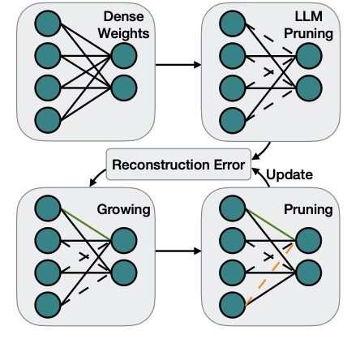
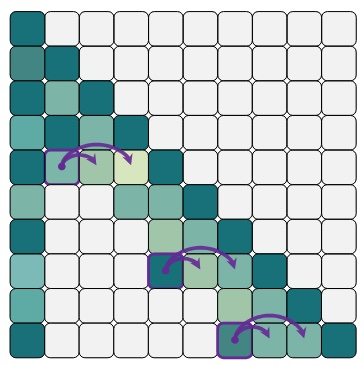
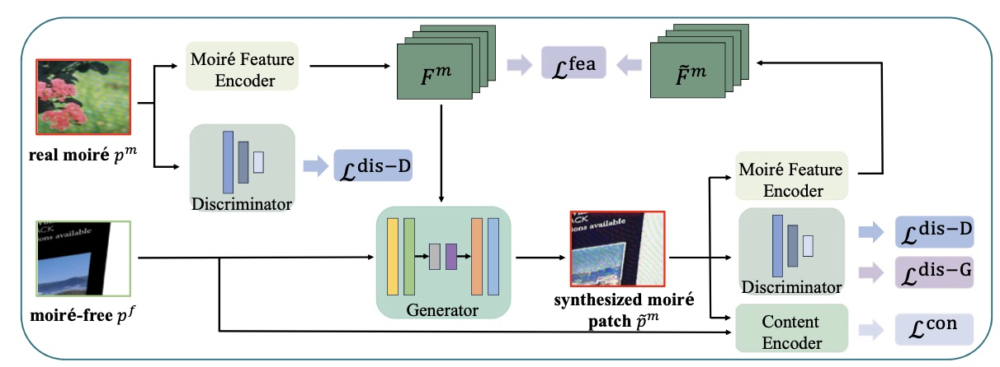
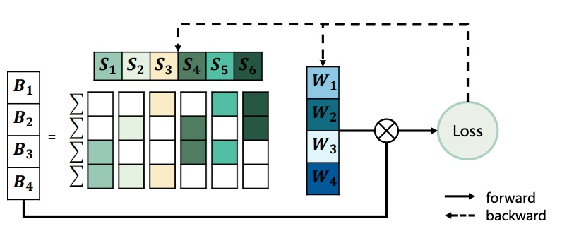

|
Third-year Ph. D Student at Xiamen University |
[Biography] [Latest News] [Publications] [Professional Activities] [Major Awards] [Statistics]
Biography [back top]
I am currently a third-year Ph. D student in the Department of Artificial Intelligence, School of Informatics, Xiamen University, advised by Prof. Rongrong Ji. Earlier, I received the B.S. degree from the Department of Artificial Intelligence, School of Informatics, Xiamen University.
My recent research interests are to develop efficient LLM & MLLM models.
- 06/2022 -- 06/2024: Visiting Student, Peng Cheng Lab, Shenzhen, China
- 09/2021 -- 06/2022: Research Intern, VIVO AI Lab, Shenzhen, China
- 09/2016 -- 06/2020: B.S. in Computer Science and Technology, Xiamen University, Xiamen, China
Latest News [back top]
- 06/2024: One paper accepted by MM 2024
- 05/2024: Two paper accepted by ICML 2024
- 02/2024: Two paper accepted by CVPR 2024
- 01/2024: One paper accepted by ICLR 2024
- 08/2023: One paper accepted by IEEE TPAMI
Selected Publications [back top]
 |
Yuxin Zhang, Mingbao Lin, Yunshan Zhong, Fei Chao, Rongrong Ji✉
Lottery Jackpots Exist in Pre-trained Models IEEE Transactions on Pattern Analysis and Machine Intelligence (TPAMI), 2023 [pdf] [code] |
|  | Yuxin Zhang, Yuxuan Du, Gen Luo, Yunshan Zhong, Zhenyu Zhang, Shiwei Liu, Rongrong Ji✉
CaM: Cache Merging for Memory-efficient LLMs Inference International Conference on Machine Learning (ICML), 2024 [pdf] [code] |
|  | Yuxin Zhang, Lirui Zhao, Mingbao Lin, Yunyun Sun, Yiwu Yao, Xingjia Han, Jared Tanner, Shiwei Liu, Rongrong Ji✉
Dynamic Sparse No Training: Training-free Fine-tuning for Sparse LLMs International Conference on Learning Representations (ICLR), 2024 [pdf] [code] |
|  | Yunshan Zhong, Yuyao Zhou, Yuxin Zhang, Fei Chao, Rongrong Ji✉
Learning Image Demoireing from Unpaired Real Data AAAI Conference on Artificial Intelligence, 2024 [pdf] [code] |
 |
Yuxin Zhang*, Yiting Luo*, Mingbao Lin, Yunshan Zhong, Jingjing Xie, Fei Chao, Rongrong Ji✉
Bi-directional Masks for Efficient N:M Sparse Training International Conference on Machine Learning (ICML), 2023 [pdf] [code] (* Equal Contribution) |
 |
Yuxin Zhang, Mingbao Lin, Xunchao Li, Han Liu, Guozhi Wang, Fei Chao, Shuai Ren, Yafei Wen, Xiaoxin Chen, Rongrong Ji✉
Real-Time Image Demoiréing on Mobile Devices International Conference on Learning Representations (ICLR), 2023 [pdf] [code] |
|  | Yuxin Zhang, Mingbao Lin, Zhihang Lin, Yiting Luo, Ke Li, Fei Chao, Yongjian Wu, Rongrong Ji✉
Learning Best Combination for Efficient N:M Sparsity Neural Information Processing Systems (NeurIPS), 2022 [pdf] [code] |
 |
Yuxin Zhang, Mingbao Lin, Chia-Wen Lin, Jie Chen, Yongjian Wu, Yonghong Tian, Rongrong Ji✉
Carrying out CNN Channel Pruning in a White Box IEEE Transactions on Neural Networks and Learning Systems (TNNLS), 2022 [pdf] [code] |
Professional Activities [back top]
- Conference Reviewer: CVPR 2022--2024, ICCV 2023, ICML 2022--2024, NeurIPS 2022-2023, ICLR 2024
- Journal Reviewer: IEEE Transactions on Circuits and Systems for Video Technology